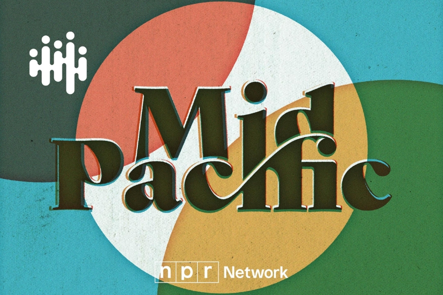
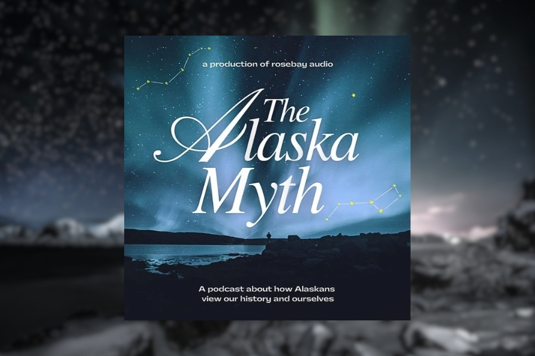

Narrative Studio — Anchorage, AK
Established 2018.
Stories grounded
in culture
and community.
Helping journalists, creatives and mission-driven organizations create with intention and care.
Start your story →
Hi, I'm Shayne —
your story architect.
I've worked across newsrooms and organizations — from broadcast media, to higher education and nonprofits. I started Bylign because I kept seeing the same problem: people with powerful stories to tell, but no clear structure to tell them.
My work sits at the intersection of digital media, cultural storytelling and editorial strategy, bringing a journalistic rigor to every project.
PreviouslyStory Architecture
For organizations, creatives, and media teams who need clarity before production: I develop the structural backbone of your story, clarifying theme, framing, audience positioning and narrative arc.
Long-Form Development
For filmmakers, journalists and newsrooms developing in-depth storytelling projects: We support at the concept, treatment, research, and structure stages, from first pitch to final narrative shape.
Cultural Storytelling
For multimedia storytellers and organizations shaping culturally grounded narratives: We provide editorial strategy and narrative consulting rooted in journalistic rigor and cultural nuance.
Creative & Audience Development
For anyone who needs ad-hoc services: We provide writing, editing, web design and audience development services to help your stories reach and resonate with the right people.
Mga Kuwento
Establishing an editorial direction for a historic podcast.

Mid Pacific
Culturally-responsive editing centering Asian American voices.

The Alaska Myth
Building and engaging a podcast audience from the ground up.
We are Rooted.
Rooted is a publication uplifting underrepresented voices in arts and culture. Through this platform, we share stories of creatives — from authors and filmmakers to musicians and poets — who challenge narratives and uplift historically excluded communities.
Visit wearerooted.xyz →Let’s work together.
Tell me about your project, where you feel stuck and what what you want to say. I'll take it from there.
shayne@bylign.com